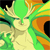

審判の日に集結せよ。
大会概要
審判の日に集結せよ。
ヴァンパイアセイヴァー 3on3 大会Judgement Day 2が今年も開催！
昨年に引き続き、世界最高峰の魔界劇場の幕が開く！全国から集結した闇の眷属たちによる妙技を味わえ！
- イベント名称
- Judgement Day 2
- 開催日時
- 2014年9月14日(日) 10:00〜20:00
- ゲームタイトル
- ヴァンパイアセイヴァー
- 大会形式
- 予選 … 3チームor4チームによるリーグ戦or変則トーナメント（プレーオフあり）
- 決勝 … 16チームによるシングルイリミネーショントーナメント
- 入場料
- お一人様 2,000円（大会参加費込み）
- ※ 観戦目的の方でも入場料がかかります。入場料は、会場貸切・設営および配信費用等に利用します
- 会場
- e-sports SQUARE AKIHABARA
主催・協賛・協力
配信
ニコニコ生放送 ニュートンチャンネルにて完全生中継！
ヴァンパイアセイヴァー（NESiCAxLive版）の試遊台の出展が決定！
- 「Judgement Day 2」の会場に「ヴァンパイアセイヴァー」の試遊台出展が決定！（NESiCA NET）
- 『ヴァンパイアセイヴァー（NESiCAxLive版）』の試遊イベント開催！
- 『ヴァンパイアセイヴァー』の大型大会“Judgement Day 2”が9月14日にe-sports SQUARE AKIHABARAにて開催！ ネシカ版の出展も（ファミ通.com）
大会結果
参加チーム数：46 参加者数：135
優勝: 赤羽OVERHEADS
-

さかもと キュービー
かつて革命戦士はこう言いました。「オレの一生にも、一度くらい幸せな日があってもいいだろう。」17年間、途中少し離れた時期もありましたが、プレイし続けてよかったなと思っています。残念ながらキュービィの強い所はあまり見せられなかったので、これからもアレしますよ。なぁ金澤。 -
DD サスカッチ
最高の街「赤羽」の名を背負い、正々堂々と中下の「読み合い」を制して勝つというコンセプトで結成したチームだったので優勝(連覇)出来て嬉しいです。あんなに笑いながら大会楽しんだのは初w二人ともありがとう！ -
ナス サスカッチ
セイヴァーのためだけに用意された特別な空間。そこにセイヴァー好きの同志が全国から150人以上も集まった事がただただ嬉しかった。セイヴァーやってて良かった！次があるなら…また皆でワイワイ対戦しようぜ！
準優勝: OneRepublic
-
Kaji リリス
eスクめちゃ快適！試合するにも観戦するにも楽しめました。あと、椅子持ち込んじゃってすいませんでしたm(_ _)m -

海の子 オルバス
最高の大会でした！準優勝という結果はとても悔しいですが、今思えばこのチーム構成で優勝を目指すという意味では明らかに準備不足でした。また来年この舞台に戻ってこられるように一年間基礎練してきます！！ -

ナカニシ ビシャモン
あの日の動きはチームメイトの二人からの信頼を得れたからこそできたものだと思います。改めて両名に、また応援して頂けた方々に感謝致します。JMD2に関わった皆さん大変お疲れ様でした。できればまたこのような場が開かれることを切に願います。
決勝トーナメント
予選・プレイオフ
Archive
エントリーリスト


{kind=link}
{kind=link}
{kind=link}
{kind=link}
{kind=link}
{kind=link}
{kind=link}
{kind=link}
{kind=link}
{kind=link}
{kind=link}
{kind=link}
{kind=link}
{kind=link}
{kind=link}
{kind=link}
{kind=link}
タイムテーブル
※スケジュールは当日の進行状況により、変更となる場合があります。大会ルール
レギュレーション
- 3on3チームマッチ
- 体力設定ノーマル（2本先取）
- スピード：ターボ3固定
- オートガードOFF（禁止）
- その他は工場出荷デフォルト設定
- 使用キャラの変更不可
- 特定技によるガード不能バグについては、広く認知されているので制限無し。ただしゲーム続行不能になるバグの利用は禁止（アナカリスの無敵状態は可）
- 試合開始前にジャンケンを行い、勝利した側がコンパネ選択権（1Por2P）を得る
- 試合開始前に先鋒の選手を審判に申告する。その後の変更は認めない
- 勝ち抜き戦とし、中堅以降の順序は自由に決定できる
- コンパネの不具合が発生した場合はプレイを中断し、即座に運営へ申告すること。対応後、再試合とする
- 試合終了後の申告については認めない。また、虚偽の申告をする等、故意に進行を妨げる行為をした場合は失格とする
- ダブルKOは再試合
大会進行の流れ
予選ブロック- 1ブロック3枠のリーグ戦or4枠の変則トーナメントを行います
- 組み合わせはくじ引きを行い、選ばれた順番に全14ブロックの中から好きなブロックを指定（K-1方式）
- 1位のみが予選通過となります。リーグ戦で勝敗数が並んだ場合は再戦を行い、もう一度並んだ場合は各チーム代表者1名を選出して再戦。再度並んだ場合は前回とは別の代表者を選出して再戦します
- 2位はプレーオフへ進みます
- 決勝進出できる枠数は2枠
- 8枠×2のシングルイリミネーショントーナメント
- 組み合わせはくじ引きを行い、それぞれ7チームを割り当てます
- ブロックそれぞれに1枠がシードになります
- 16枠のシングルイリミネーショントーナメント
- 組み合わせはくじ引きを行い、くじの番号順に対戦相手チームを指名（待ちはできません）
- くじを引く順番はブロックナンバーの順番通りに行います
- 指名された側は1回限り拒否権を行使できます
- 指名を拒否されたチームは指名順最後尾に移動します
注意事項
- 当日はライブ配信およびメディア取材等で会場内の映像配信や写真撮影が行われます。あらかじめご了承ください。
- 会場内は終日禁煙となります。喫煙は指定の場所（会場外1F）でお願いします
- 会場内への飲食物の持ち込みは厳禁です。会場併設のバーカウンターにてドリンク（アルコール類含む）・フード類を販売しています
- 当日は会場全エリア貸切で、通常利用時のような会員登録作業等は必要ありません
- 入場受付後の会場への入退場は自由です。その際配布物がありますので、無くさないように注意してください
- コスプレは自由ですが、更衣室はありません
- 大きい荷物（トランクケース等）は会場スタッフに預けることができます。また、コインロッカーもあります
- 児童の入場料はかかりません。
- 会場内での写真撮影・動画撮影は特に問題ありませんが、運営および周囲の方へひと声かけてください
- 当日会場内は大会用の筐体のみになります。家庭用（Xbox360版ヴァンパイアリザレクション）をいくつか、家庭用アケコン対応の特殊基板を1セットを設置。会場近くのクラブセガ秋葉原新館では対戦台が4～6セット稼働しています
- タイムスケジュールはあくまで目安であり流動的です。運営のアナウンスに従い、スムーズな運営にご協力ください
その他
運営ボランティア募集！
運営進行を手伝っていただける方を募集しています。具体的な作業内容は以下のようなものを想定しています。
- 実況・解説（MC）：3～4人
状況に応じて交代で行います。 - 試合管理・書記：4～5人
こちらも自分の予選ブロック以外を担当してもらいます。主な業務は、双方の先鋒を確認、試合経過を専用シートに記入、結果を運営本部に報告、その他雑用など。
後夜祭
- 2014年9月15日（月）
- 13:00開始（エントリー受付12:00～12:30）
- 開催場所：ゲームニュートン大山店
- 形式：2試合先取シングルイリミネーション1on1戦
- 参加費：100円
- レギュレーション：本戦と同様
打ち上げについて
大会終了後にイベント会場を飲み会モードに転換し、その場で打ち上げを行います。筐体や家庭用も解放しますので、自由に遊んでいただいて結構です。お申込みは、こちらから（選手としてエントリーされる方は、エントリーフォームからそのままお申込み頂けます）。会費は、当日受付時に集めさせて頂きます。お気軽にご参加ください！
- 場所
- e-sports SQUARE AKIHABARA
- 時間
- 大会終了後から2〜3時間
- 会費
- お一人様4000円（コース料理＋飲み放題）
ツイッター公式アカウント
@ds_federation からのツイートスタッフ一覧
-
 さかもと主催者
さかもと主催者セイヴァーおじさん。
-
 サス兄広報担当
サス兄広報担当サスカッチ使ってる兄ちゃん
-
 デカメロンサイト構築・運営担当
デカメロンサイト構築・運営担当年1回ほそぼそとセイヴァーをプレイしつつ、運営スタッフとして活動している。
-
 松田さんイベントバックアップ
松田さんイベントバックアップ